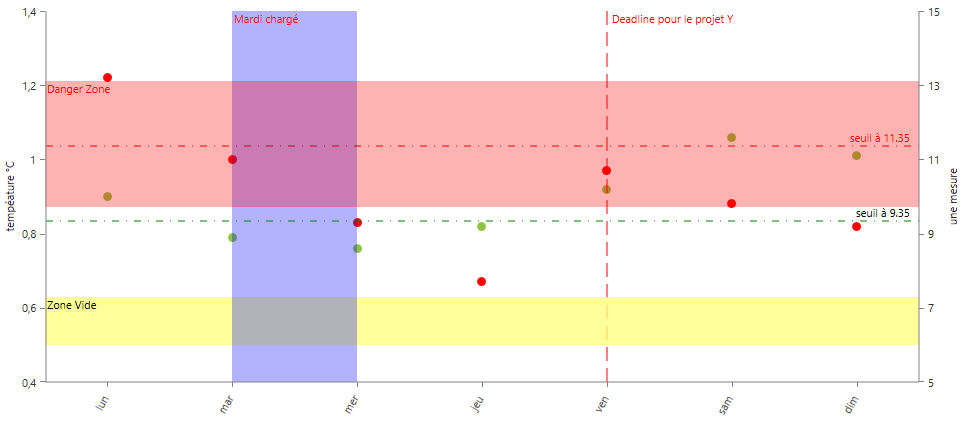

Les annotations offrent au développeur la possibilité d'ajouter sur la zone d'affichage des séries (plot area) des indications supplémentaires, distinctes des données (points, séries).
Les annotations ne fonctionnent qu'avec des graphiques cartésiens.
Ces annotations permettent de spécifier ou préciser le contexte les données du graphiques ou d'une zone particulière (seuils, zone de fonctionnement d'un capteur, etc...).
L'impression d'écran ci-après montre un exemple d'utilisation des annotations.

Note : Comme pour les séries, le rendu des annotations est réalisé dans l'ordre dans lequel elles sont déclarées, les premières pouvant, le cas échéant être partiellement ou totalement masquées par les suivantes.
Note2: Comme pour les points, la nature des coordonnées des annotations est variable, et dépend de la nature de l'axe (ou des axes) au(x)quel(s) elle est liée. Les fonctions de description des annotations demandent donc des paramètres alphanumériques pour les coordonnées, mais ceux-ci pourront être parfois de type texte (cas d'un axe catégoriel) ou numérique (axe numérique) ou même dateHeure.